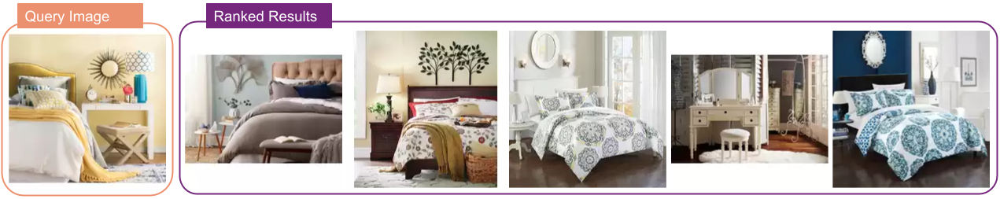
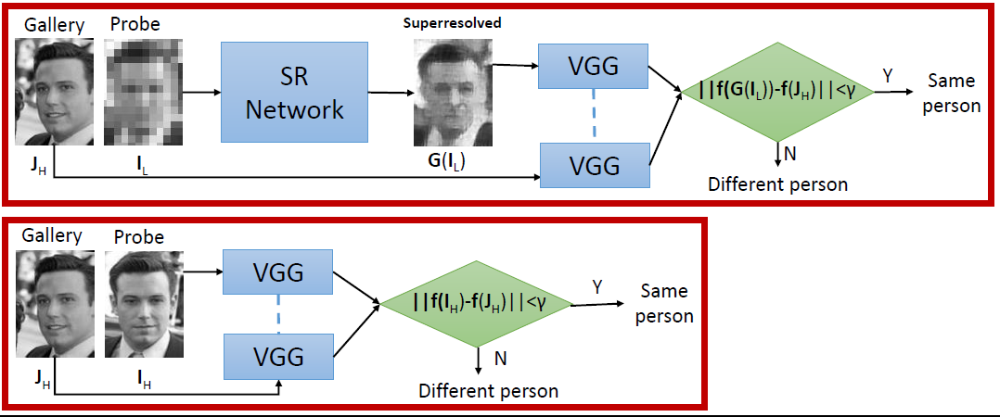
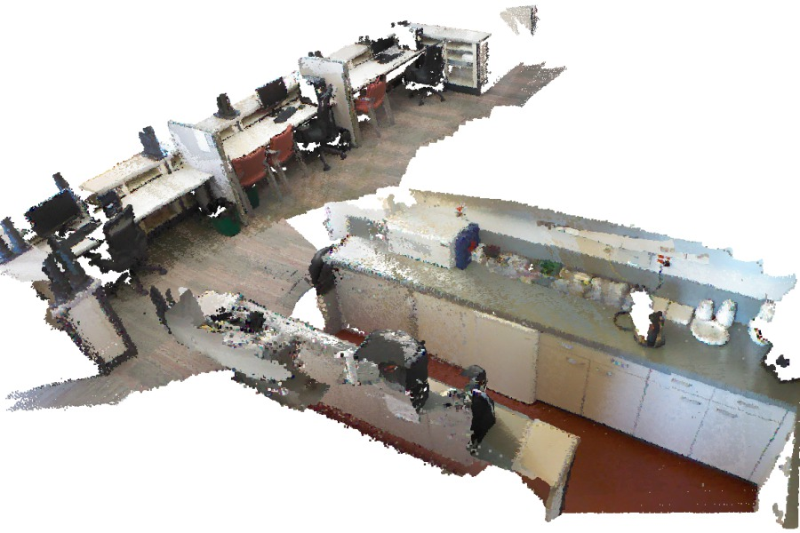
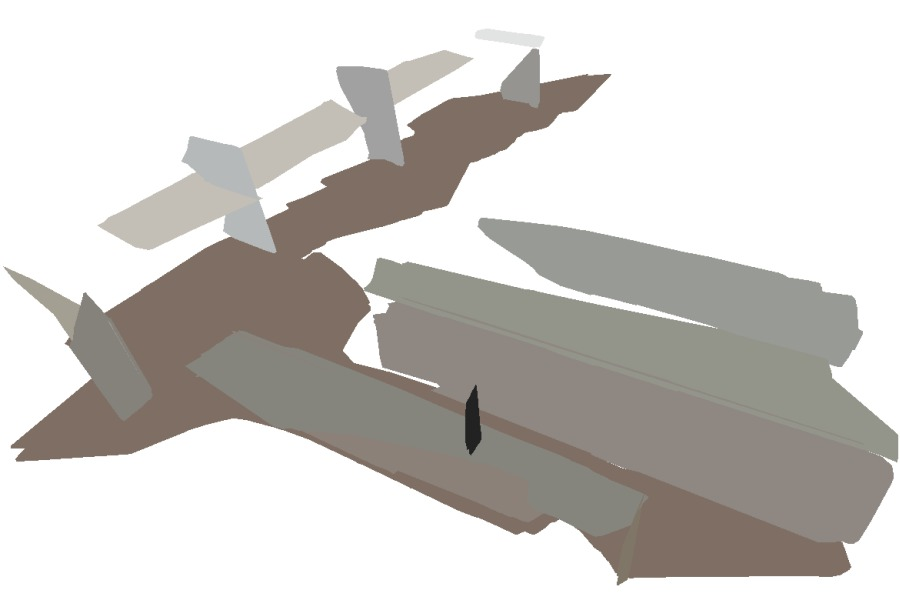
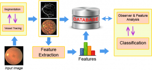
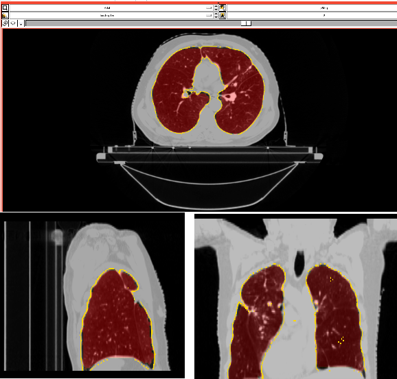
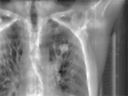
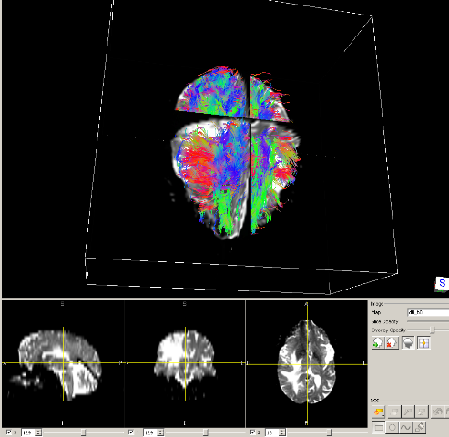

Research
Industry Research
Pedestrian Navigation for Augmented Reality
Meta Reality Labs · 2020–2023Improving map data quality and pedestrian navigation pipelines in collaboration with the OpenStreetMap community, with a focus on real-world deployment in the Ray-Ban Meta smart glasses product. This work involved 2D/3D data processing for mapping at scale, enabling turn-by-turn pedestrian navigation as an augmented reality use-case displayed directly on the glasses.
Understanding Interior Design: Room & Style Estimation
Wayfair · 2018–2019Interior design and home decoration involve a high amount of subjectivity and guesswork. In addition to the visual appearance of each individual item, the composition of them is highly important. We present a room image retrieval framework to search for room ideas for a given query image based on style. Our technique paves the way to style-aware product recommendation with a holistic understanding of room style.

Face Super-resolution
MERL · 2018Face super-resolution methods usually aim at producing visually appealing results rather than preserving distinctive features for further face identification. We propose a deep learning method for face verification on very low-resolution face images that involves identity-preserving face super-resolution with an extreme upscaling factor of 8.

3D Object Detection, Localization and Modeling
MERL · 20173D localization of objects is essential in many robotics applications. We work on detecting and 3D modeling objects in various scenarios such as moving cameras and dynamic objects. Our technique provides simultaneous localization and modeling of objects in a SLAM framework.

3D Reconstruction of Indoor Environments using RGB-D Sensors
MERL · 2014–2016We present a real-time 3D reconstruction system using an RGB-D sensor on a hand-held tablet. The main novelty of the system is a simultaneous localization and mapping (SLAM) algorithm that uses both point and plane features as primitives. Planes are the most common structures in man-made indoor and outdoor scenes.


Academic Research
Retinal Image Processing
Northeastern University · PhDThe need for computerized analysis of retinal images has been increasing with the wide clinical use of fundus photography. This project involves an image processing and machine learning framework spanning vasculature segmentation through to diagnosis of Retinopathy of Prematurity (ROP) in retinal images.

Biomedical Image Segmentation Using Principal Curves/Surfaces
Northeastern University · PhDSegmentation of organs is an essential and time-consuming task for radiation treatment of cancers. The aim of this project is to utilize principal curves for automatic and semi-automatic segmentation of organs.

Cell Motion Flow Analysis
Northeastern University · PhDAnalyzing motion flow of cells is a challenging problem due to noise in images and uncontrolled motion of cells. We are interested in automatically detecting regions of organized motion and motion patterns in cell videos.
Real Time Lung Tumor Tracking
Northeastern University · PhDRadiotherapy is an effective treatment technique for lung cancer, but the movement of lung tumors during normal respiration makes it difficult to accurately irradiate the tumor. This project focuses on real-time lung tumor tracking by incorporating information and labels from 4DCT on kilovoltage X-ray videos for treatment-day specific tumor motion models.

Predicting Migration of Cancer Cells using Diffusion Tensor Imaging
Northeastern University · PhDDiffusion Tensor Imaging (DTI) shows the motion flow in the white matter of the brain. In this project, we are interested in predicting migration of cancer cells using diffusion tensor MRI and finding whether neuronal fiber pathways might provide possible routes for the spread of cancer cells — with the goal of creating improved anisotropic margins for radiation treatment of brain tumors.

Robust Facial Feature Tracking
Boston UniversityAt Boston University, I worked on the Camera Mouse project — a mouse replacement interface for users with severe disabilities. I focused on automatic re-initialization techniques in cases of tracking failure, proposing an information fusion approach using multiple cameras to assign reliability measures across views and decide on tracking failure.